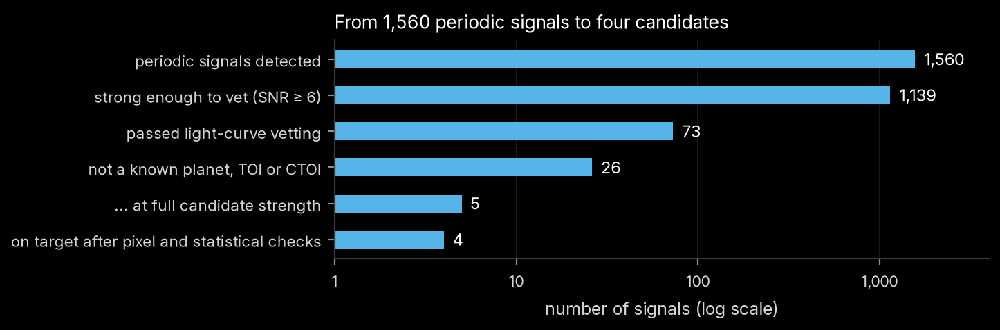

Chapter 2 of 8
Most periodic dips in TESS light curves are not planets. This chapter defines the automated tests that
separate planet-like signals from eclipsing binaries, light from neighbouring stars, instrumental
artefacts and stellar variability (tess_search/vetting.py), and reports what they did to the 1,139
vetted signals. The tests follow the logic of the Kepler Robovetter (Thompson et al. 2018) and recent
TESS vetters such as LEO-Vetter (Kunimoto et al. 2025), simplified and documented in code.
For each signal the following are computed:
| quantity | definition |
|---|---|
| trapezoid fit | depth, total duration T₁₄, ingress fraction, centre offset, fitted to the binned fold |
| per-transit depths | each transit's core ( |
| SNR (red-noise aware) | weighted mean of per-transit depths over its error |
| odd/even | weighted mean depths of odd and even transits and their difference in σ |
| secondary | the strongest other box in the fold (SNR, phase, depth) and the depth at phase 0.5 |
| uniqueness | folded red-noise SNR minus the third-strongest feature in the fold |
| single-event share | largest single transit's share of the summed SNR² |
| depth consistency | χ²/dof of per-transit depths and the excess fractional scatter |
| halves | signal SNR in the first and second halves of the transits |
| implied radius | √depth × R⋆ |
| duration ratio | T₁₄ divided by the central-transit duration expected for the star (circular orbit) |
| centroid motion | in/out-of-transit flux-weighted centroid differences per sector, null-calibrated |
| background change | in/out-of-transit SPOC background, null-calibrated, signed |
| SAP depth | depth in pre-PDC flux, divided by the SPOC crowding factor |
| edge fraction | fraction of transits within 0.5 d of a data gap longer than 0.5 d |
| harmonics | proximity to the spacecraft orbit (13.7 d), sector (27.4 d) and stellar rotation, × ½, 1, 2 |
A test either rejects a signal (false positive) or flags it (a caution that prevents the candidate verdict). A missing test never counts as a pass.
| impostor | test | rejects when | flags when |
|---|---|---|---|
| eclipsing binary | odd/even depths | difference > 3σ | |
| dip at phase 0.5 | > 4σ and > 10% of the primary depth | ||
| other dip anywhere in the fold | > 5σ and > 10% of the primary depth | ||
| implied radius | > 20 R⊕ | ||
| V shape | SNR > 20 and ingress fraction > 0.4 | ||
| light from a neighbour | centroid motion | z > 5, p ≤ 1/25 and implied source > 30″ away | z > 4 and source > 15″ |
| duration vs. stellar density | T₁₄ > 3 × expected | > 2 × expected | |
| instrumental artefact | transits observed | fewer than 3 | |
| single-event share | one transit > 50% of the signal | ||
| data-gap pile-up | > 50% of transits beside gaps | ||
| duty cycle | dip fills > 15% of the orbit | ||
| spacecraft periods | within 3% of 13.7 d or 27.4 d × ½, 1, 2 | ||
| background in transit | rises at z > 6, p ≤ 1/25 | ||
| half-data consistency | SNR > 9 overall but < 1.5 in one half | ||
| per-transit depths | χ²/dof > 3 and scatter > 30% of the depth | ||
| noise / variability | folded red-noise SNR | < 5 | 5–7, or not computable |
| uniqueness | < 2 | ||
| rotation harmonics | within 3% of P_rot × ½, 1, 2 (clearly spotted star) and SNR < 15 | same, SNR ≥ 15 |
Three details are deliberate. Only ½, 1 and 2 times the spacecraft orbit are treated as systematics: in the injection test, rejecting ⅓ and ¼ of the orbit removed real injected planets without matching any known TESS systematic. The spacecraft window is 3% because TESS's orbit drifts by a few percent over the mission. And a background dip during transit is expected for bright stars whose wings leak into the background pixels, so only a background rise is flagged.
| verdict | rule |
|---|---|
| false positive | any rejecting test fires |
| candidate | red-noise-aware SNR ≥ 7.3 (Kepler's TCE threshold), folded red-noise SNR ≥ 7, no flags |
| weak candidate | SNR ≥ 6, otherwise |
| below threshold | SNR < 6 |
Some rules were refined while the search ran (for example, the spacecraft-period window and the
treatment of an untestable red-noise statistic). Every stored result was re-classified with the final
rules (scripts/06_summarize.py), so all stars are judged alike.
| verdict | signals |
|---|---|
| false positive | 1,044 |
| candidate | 50 |
| weak candidate | 23 |
| below threshold | 22 |
The most frequent reasons for rejection (a signal can have several):
| reason | signals |
|---|---|
| dip lasts > 3× longer than a planet could take to cross the star | 531 |
| dip fills > 15% of the orbit | 480 |
| not distinct from other dips in the fold (folded red-noise SNR < 5) | 442 |
| period near the stellar rotation period or a harmonic | 437 |
| red-noise test could not be run (flag) | 403 |
| another dip in the fold nearly as strong (flag) | 346 |
| per-transit depths inconsistent (flag) | 315 |
| one transit carries most of the signal | 205 |
| odd/even depths differ | 160 |
| dip at phase 0.5 | 146 |
Of the 73 signals that passed, 47 match a known planet, TOI or CTOI, 3 match only a SPOC TCE that was never promoted, and 23 match nothing. At full candidate strength the novel signals are 5: two that appear in no list and three SPOC TCEs. The other 21 novel signals are weak candidates (Chapter 7).

Of the 84 catalogued signals the search recovered on these stars (Chapter 3), vetting passed 76 and rejected 8. The rejected ones include signals the TESS Follow-up Observing Program had already classified as false positives, for example TOI-419.01 (a nearby eclipsing binary), TOI-1178.01 (a V-shaped eclipse) and TOI-1635.01.
Every novel signal that passed (5 candidates, 21 weak candidates) was taken through a follow-up stage
(scripts/08_followup.py): a fresh vetting pass, a least-squares physical transit fit (batman,
stellar-density prior), an independent search of each half of the data near the candidate period, and
a census of Gaia DR3 neighbours within three TESS pixels with the eclipse depth each would need to
reproduce the signal. The per-signal results are in results/followup/. The deeper checks that follow
in Chapters 4 and 5 start from these.